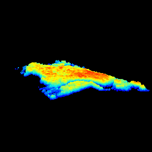
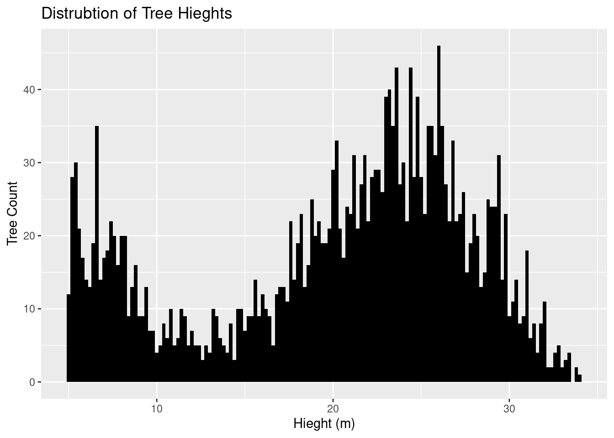
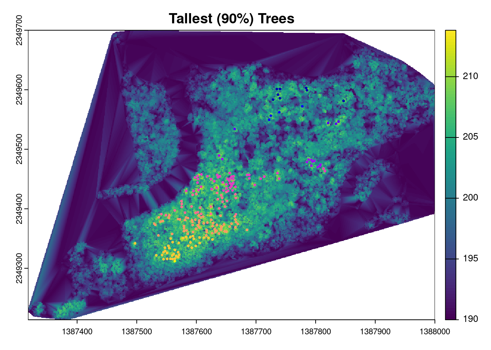

Script
library("sf")
library("terra")
library("lidR")
library("raster")
library("dbscan")
library("tidyverse")
library("leaflet")
library("RColorBrewer")
library("rgl")Understanding forest structure and characteristics in Letchworth Learning Forest
Forest structure plays a critical role in maintaining biodiversity and supporting ecosystem services (MacKinnon, 2012). However, measuring forest structure through traditional field data collection is challenging due to time and funding constraints, particularly in large forests. The introduction of remote sensing has been a key driver in obtaining large forest structure data indirectly, while lessening the burden of time and funding limitations (Wulder et al., 2012). In this project, I utilized publicly available remote sensing data to answer a few questions about the Letchworth Teaching Forest’s structure and assessed the effectiveness of remote sensing as a stand-alone method for forest strucutre analysis.
These questions include:
1. What is the approximate tree population?
2. Where are the locations of individual trees?
3. What is the distribution of tree heights in the study site?
4. Where are the 90% percentile of tallest trees located?
5. Is there spatial clustering of tall trees?
This project utilizes the most recent (2019) remote sensing LiDAR point-cloud data to measure vertical forest structure within the Letchworth Learning Forest near the Ellicott Complex. The LiDAR point-cloud data (“las”) was , originally, horizontally projected in NAD83 (2011) and vertically measured in meters. In order to address the project’s questions and goals, Z-values from the point cloud data were filtered and manipulated, using the lidR and dbscan packages, to find individual trees, tree heights, and spatial clustering of the tallest trees within the study area. The new filtered data set was called “filteredOUT_las”.
filterOUT_las was later transformed into WSG 84 in order to project the tree locations and spatial clustering onto a leaflet map. The critical r packages that were utilized included:
Below is the r script.
library("sf")
library("terra")
library("lidR")
library("raster")
library("dbscan")
library("tidyverse")
library("leaflet")
library("RColorBrewer")
library("rgl")las <- readLAS("data/Letchworth_Teaching_Forest_Lidar.laz")
## Look at the parameter coordinates of original data
original_bbox <- st_bbox(las)
original_bbox xmin ymin xmax ymax
1387000 2349000 1388000 2350000 polygon_coords <- matrix(c(
1388000, 2349355, #right bottom corner
1388000, 2349700, #right top corner
1387450, 2349700, #mid top corner
1387450, 2349450, #mid mid corner
1387300, 2349200, #left bottom corner
1387350, 2349200, #mid bottom corner
1388000, 2349355 #right bottom corner
), ncol = 2, byrow = TRUE)
## Bounding Box has been given CRS associated with las-CRS
polygon_sf <- st_sfc(st_polygon(list(polygon_coords)), crs = st_crs(las))las_clipped <- lidR::clip_roi(las, polygon_sf)
## Check if the crs is still the same
st_crs(polygon_sf) == st_crs(las)
## Filter out any OUTliers z-values from las
filterOUT_las <- filter_poi(las_clipped, Z >= 180, Z <= 220)# plot(filterOUT_las)
# movie3d(spin3d(axis = c(0, 0, 1), rpm = 2,), duration = 5, movie = "data/lidar")
knitr::include_graphics("data/letch.gif", error = FALSE)
## Reproject the las to 4326 for Leaflet
options(digits = 15)
las84 <- st_as_sf(las_clipped, coords = c("X", "Y"), crs = 26918) # crs was NAD83(2011)
las84 <- st_transform(las_clipped, crs = 4326)
## Create a dataframe of points lat and long to check if st_transform worked
las_df <- data.frame(lat = st_coordinates(las84)[, 2],
long = st_coordinates(las84)[, 1])
unique(las_df$lat)[1] 43.005 43.006 43.007 43.009 43.008unique(las_df$long) [1] -78.797 -78.796 -78.795 -78.794 -78.793 -78.792 -78.791 -78.790 -78.789
[10] -78.788 -78.787## LidR functions to find individual trees
chm <- rasterize_canopy(filterOUT_las, 0.25, pitfree(subcircle = 1))
tree_tops <- locate_trees(chm, lmf (ws=5))
filtered_tree_tops <- tree_tops %>%
filter(Z >= 185)
#plot(chm, col = height.colors(50))
#plot(sf::st_geometry(filtered_tree_tops), pch = 3)
#plot(sf::st_geometry(filtered_tree_tops), add = TRUE, pch = 3)
nintypercent <- quantile(filtered_tree_tops$Z, 0.90)
tall_trees <- filtered_tree_tops[filtered_tree_tops$Z > nintypercent,]
coords <- st_coordinates(tall_trees)tree_Z <- as.data.frame(filtered_tree_tops$Z)
colnames(tree_Z) <- c("height")
ind_trees <- tree_Z$height - 180
ind_trees <- as.data.frame(ind_trees)
tall_trees_height <- as.data.frame(tall_trees$Z - 180)
colnames(tall_trees_height) <- c("height")
## in meters
mean <- mean(ind_trees$ind_trees)
mean <- round(mean, 2)
subtitle = paste("Total trees = ", nrow(ind_trees), " trees \nMean (Blue) = ", mean,"\n90% of tallest trees (Red)")
ggplot()+
geom_histogram(data = ind_trees, aes(x = ind_trees), binwidth = 0.5,, color = "black", fill="green", alpha = 0.25)+
geom_histogram(data = tall_trees_height, aes(x = height), binwidth = 0.5,, color = "black", fill="red", alpha = .5)+
geom_vline(aes(xintercept = mean(ind_trees$ind_trees)), color="blue", linetype="dashed", linewidth=1)+
theme_classic()+
labs(title = "Distribution of Tree Heights in Meters", x = "Height (m)", y = "Frequency",
subtitle = subtitle,
caption = "Letchworth Teaching Forest (2019)")
knitr::opts_chunk$set(global.device = TRUE)
plot(chm, main = "Tree Tops")
plot(filtered_tree_tops[2],pch = 16, cex = .5, main = "tree_tops", add = TRUE)
plot(chm, main = "Tallest (90%) Trees")
plot(tall_trees, pch = 16, cex = .5, main = "tall_trees", add = TRUE)
knitr::opts_chunk$set(global.device = TRUE)
dbscan_result <- dbscan(coords, eps = 12, minPts = 5)
tall_trees$dbscan_cluster <- as.factor(dbscan_result$cluster)
colorsize = length (unique (tall_trees$dbscan_cluster))
## Filter out first cluster
cluster <- tall_trees %>%
filter(dbscan_cluster != 0)
plot(chm)
plot(cluster[3], pch = 16, cex = .5, col = factor(cluster$dbscan_cluster), main = "Tree Clusters", add = TRUE)
pal <- colorFactor(brewer.pal(4, "Set1"), domain = tall_trees$dbscan_cluster)
st_tall_trees <- st_transform(tall_trees, crs = 4326)
st_tall_trees_filtered <- st_tall_trees %>%
filter(dbscan_cluster != 0)
st_tall_trees_filtered$Z <- st_tall_trees_filtered$Z - 180
leaflet (st_tall_trees_filtered) %>%
setView(lng = -78.793, lat = 43.007, zoom = 15) %>%
addTiles() %>%
addCircleMarkers(
radius = 2,
color = ~pal(dbscan_cluster),
popup = ~paste("Tree ID:", treeID, "<br> Height (m):", Z,"<br> Coordinates:", geometry)) #install.packages("sf")
#install.packages("terra")
#install.packages("lidR")
#install.packages("raster")
#install.packages("dbscan")
#install.packages("tidyverse")
#install.packages("leaflet")
#install.packages("RColorBrewer")
#install.packages("knitr")
#install.packages("rgl")This study demonstrates the potential of using remote sensing data to assess forest structure with promising results. The analysis indicates a total of approximately 2,447 trees, with individual tree locations identified. Spatial clustering of the tallest trees were observed in six areas. The overall average height across the entire tree population was found to be 20.19 meters. It is important to note that the results derived solely from remote sensing data and computational analysis, offer only a rough estimate of forest structure characteristics. For more precise and reliable conclusions, incorporating field data is essential to provide a reference for validating the remote sensing analysis.
In conclusion, while remote sensing provides a faster method for assessing forest characteristics, the inclusion of field data is crucial to ensure the accuracy and reliability of the results. Combining both approaches will offer a more comprehensive understanding of forest dynamics.
MacKinnon, A. (2012). Forest Structure: A Key to the Ecosystem. https://www.semanticscholar.org/paper/Forest-Structure-%3A-A-Key-to-the-Ecosystem-MacKinnon/57c825a33e087bd8797333885ebf641ed8416377
Wulder, M. A., White, J. C., Nelson, R. F., Næsset, E., Ørka, H. O., Coops, N. C., Hilker, T., Bater, C. W., & Gobakken, T. (2012). Lidar sampling for large-area forest characterization: A review. Remote Sensing of Environment, 121, 196–209. https://doi.org/10.1016/j.rse.2012.02.001